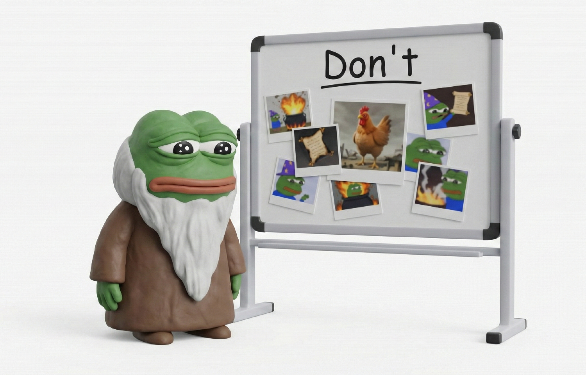

A CTO's Challenges
What I learned fumbling through 2 years and 7 months as a CTO
I, Junha Yang, served as CTO/CISO of Hyperithm for 2 years and 7 months, from 2023 to 2026.
- Hyperithm is a 60-person crypto trading firm, and I ran a 10–20 person engineering org within it.
- Hyperithm has a culture where people leaving the company wrap up their work in a blog post on their way out.
- Funny enough — this culture exists because I proposed it, and now my turn has already come.
- I'll honestly share the various challenges I faced as CTO during my tenure, and the insights I was able to extract from them.
1. Tech Leading
Technical Decision-Making
- A CTO's life is a continuous stream of answerless choices — tech stacks, interface decisions, architecture design, and so on.
- These technical decisions snowball much more than you'd think. An organization can end up spending half a year flailing and throwing away the entire codebase.
- I've lived through this too — I over-abstracted the network system talking to crypto exchanges, and the man-months that evaporated in that process ran into the double digits.
- Infrastructure especially has a huge impact on cost, security, lock-in, productivity, and so on, so the damage is bigger than simply picking the wrong code structure or library, and changing it late is hell.
- Even more so in the AI era. The bottlenecks I hit most when using coding agents were infrastructure-related — subscriptions, deployment, auth, connectivity, observability, etc.
- Early on I made a wrong call on the auth layer and RPC protocol, and it's become truly nasty legacy today — I still occasionally hear grumbling(?) from team members about it.
- The most common decision-paralysis pattern was having to pick one of: 1) use open source, 2) use SaaS, 3) build it ourselves.
- I chose 3 way too often. I was an inexperienced CTO at the time, so I had an instinctive fear of stacks I hadn't personally used, and I think I ended up choosing from-scratch because it seemed predictable and controllable (of course, it was anything but).
Case-Based Thinking
- So more than 80% of decisions should be grounded in concrete similar cases.
- This empirical approach may make innovation hard, but at least you won't blow up catastrophically.
- You especially have to stick to case-based decisions in situations like these:
- High risk of missing schedule or quality targets
- Technology is not the core of the business
- You have to optimize for abstract values that can't be tested or evaluated (security, UX, etc.)
- Having fallen into the "intuition trap" often, I tried my own rule whenever voicing an opinion at work: "find at least one past incident in Slack that supports this."
- Our company Slack traffic was pretty heavy, and an idea you can't cite even a single related case for is unlikely to be valid.
- It was a simple but effective filter, and something I could commonly observe and learn from traders, whose very job is to predict market behavior based on past cases.
- Going through this thought process even nudged my MBTI N score down a bit(?).
- Seniority ultimately seems to be the ability to quickly and accurately recall relevant references or past similar cases when faced with a problem.
- Even trying ChatGPT Deep Research, how real companies actually operate internally is often private information, so there's a high barrier to replacing this with an "AI one-click" based on public data crawling.
- It's best if you can make all these many decisions yourself, but just having a capable senior engineer around and frequently hearing their "previous company stories" goes a long way.

Organizational Maturity
- A technical decision the team can't get on board with is, with very high probability, wrong, in my view. If the team isn't convinced, it means 1) you're thinking something wrong, 2) you explained it poorly, or 3) the team's level is low.
- Ultimately, all three are your own problem. Let me say more about 3)…
- Education and growth are investments with unclear ROI from the company's perspective.
- Technical education of developers is often realized not by sitting them down for lectures or having them complete some program, but through the human composition of "maintaining an appropriate junior:senior ratio."
- So when reference-checking seniors, I always asked, "How did this person contribute educationally to the team?"
- Even an extremely Individual Contributor type of engineer can be an Influential Contributor when it comes to education and culture. I liked those kinds of people.
- One engineer insisted on regular retros and got them institutionalized across the org, and another opened a cryptography study group at the company where we took turns doing paper-reading during lunch.
- Anyway, mixing senior engineers properly into the team is a pretty expensive and complex problem, so the person who can put the needed drive behind it is the CTO.
- Separately from senior hiring, I tried creating a "dev chit-chat channel" in the company Slack to build a kind of in-house developer community, and every month or two I'd gather all engineers to take turns doing a tech seminar on any topic they liked.
- Was the educational effect enormous? No, but just sharing interesting POVs we'd seen on Hacker News and Reddit was enough to provide stimulation and shift perspectives.
- Even now, dozens to hundreds(?) of messages a day get posted in the in-house dev community. I think I at least built an org with a strong atmosphere of discussing and exploring new technical topics.
2. Managing
Cross-Team Collaboration
- Engineers are generally most satisfied and most performant when solving "well-defined problems."
- The most common thing that makes well-defining a problem difficult is unpredictable shifts in priority.
- Priorities are always changing, but unpredictable changes are usually triggered by other teams.
- When inter-team communication is left to the ICs, issues tend to get solved only superficially while the underlying inefficiency remains.
- The pattern I saw most was the maddening combo of "another team making ad-hoc requests" meeting "our team solving them ad-hoc."
- When you collected the scattered requests coming in from other teams, they reduced to something like "please build us a new database with a reasonably extensible schema, plus a CRUD service."
- But our team, which had been accommodating them piecemeal without context, ended up saddled with an unidentifiable patchwork API.
- As the org head, the CTO should invest heavily in understanding other teams, and through "work only they can do" — i.e., high-level cross-team coordination — keep overall company productivity up.
- Doing the detailed day-to-day task management within the team personally is probably only possible when the team is 6 or fewer.
Cheetahs and Eagles
- IC engineers and middle managers fundamentally immerse in a "cheetah's-eye view," and meanwhile the CTO has to use an "eagle's-eye view" to uncover opportunities the team didn't think of.
- What middle managers can do well is raise the quality and efficiency of execution.
- The CTO has to think critically at a meta level — is this execution actually valuable right now, is it fake work, should we just stop it and do something else entirely?
- Big directional shifts generate big sunk costs. Bearing sunk costs ruthlessly and driving toward the highest expected value is the CTO's job.
- Middle managers are the ones who create maturity within inertia and path-dependency. The CTO has to focus on "what middle managers can't do."
- At Hyperithm we used the term "abandonment" (유기) as a meme. We'd "abandon" projects, "abandon" tasks…
- I think the term came out of a mindset of normalizing "cutting losses" for expected-value optimization as a routine and inevitable thing.
- Being a trading company, we also needed to be cold-blooded about bearing sunk costs.
- Even when you decide that staying the course is right, you have to temperature-check whether the team is bought into that direction.
- Early in my tenure, the comment I heard most often in 1on1s was, "I wish I could really feel whether the engineering I'm doing actually has impact, and how it's being used."
- A cheetah's speed drops sharply the moment it looks back. The CTO has to make it so the cheetah can stay immersed without looking back.
- As a simple example, I'd remember light compliments that came up casually in meetings with other teams and pass them along — "So-and-so from another team mentioned today that the feature you built is really great."
- Even this trivial motivation helped ICs' immersion a lot.
The Art of Delegation
- To escape the endless yoke of context switching, I resolved to delegate every single time, but the fundamental bottleneck I kept hitting was "a shortage of middle managers."
- Skipping middle managers and delegating directly to individual ICs carried big costs just in explaining complex business context and background, and it was also hard to give them good criteria so the IC could judge "task completion conditions" for themselves.
- So no matter how big the team got, without capable middle managers, you couldn't delegate even if you wanted to.
- I could have solved this with new hires, but the first thing I did was merge/split the 3 cells on the team into 5 smaller cells.
- Splitting smaller immediately increased the number of middle-manager slots.
- Former ICs took on new middle-manager roles, gaining long-term opportunities for growth.
- The people making up the most critical bus-factor lineup in a team are mostly middle managers.
- Relying on hiring alone is too risky. Evaluating an unknown person's "management ability" is pretty tricky (compared to evaluating technical or communication skills).
- So the CTO should deliberately run a long-term growth pipeline where people rotate through management experience.
3. HR & Hiring
Communicating with the Team
- You should do 1on1s with key team members at least once a quarter.
- "Three months" is like a magic base unit in HR.
- Because to newly hire for a position, the company needs roughly 3 months total — 1 month of sourcing → 1 month of evaluation and negotiation → 1 month of handover and waiting to start.
- So it's best to know the resignation risk of key personnel at least three months in advance, which is why you have to do 1on1s every three months.
- In my experience, the biggest function of a 1on1 is drawing out "problem awareness."
- Serious doubts about the org, thoughts about quitting, ongoing stress — these aren't easily confessed in day-to-day settings.
- Curiously, many problems could be resolved on the spot right there.
- Just offering perspectives and information the team member probably didn't know or hadn't considered — "How about a pilot stint in Team X after this project wraps up?" or "You probably didn't know, but issue Y blew up in the team next door, which is why this task got thrown at you on short notice" — could provide significant relief.
- What's worse than a "problem" is not even being aware whether there is a problem, or leaving someone to wrongly perceive something non-problematic as a problem.
- A 1on1 is also practically the only chance someone has to voice feedback about the company or leadership, beyond just the CTO or engineering org.
- To build the trust that "your message will be delivered to leadership unfiltered (if you want)," I'd hand the 1on1 notes to the team member, give them a chance to freely edit, and then share them with leadership as-is.
- It's good to think weekly about how to set next year's base salaries for each org member.
- The result has to be 1) fair vs. their own expectations, 2) fair vs. internal comps, and 3) fair vs. the market. A hard high-dimensional equation, in other words.
- In conclusion, the optimal outcome seemed to be everyone feeling "exactly as I expected" when they got the base salary notice.
- If someone's disappointed, expectation management failed. You should have been giving underperformers continuous feedback, and continually syncing in 1on1s so they could hold reasonable predictions about performance and compensation.
- If you dodge the social stress and cost of persuasion continuously and end up asking HR to "deliver the notice" at the last minute, you're throwing away the easiest opportunity you had to predict and manage sudden resignation risk.
- The higher up you are, the fewer chances for metacognition, and the CTO too has to receive feedback.
- In every 1on1, I made it a rule to mandatorily solicit "opinions about me," and regardless of what those opinions were, I stuck to the principle of sharing them with leadership as-is, as described above.
- To team members who answered "I think everything's fine with you," I'd persistently press(?) with "there's no way that's true."
- At one point I tried receiving feedback via a fully anonymous Google Form — got a dismal 5% response rate, but even those few responses were enough to shift my perspective.
Engineering Org Branding
- Someone short on verbal dexterity or averse to networking might not fit the CTO role. There are limits to talent sourcing.
- At minimum, you have to write decent LinkedIn posts. You need PR ability to convey an image of the company's engineering org — short, strong, and provocative.
- In my case, to meet quality developers, I tried a pretty wide range of things — university career fairs, coding competition sponsorships, LinkedIn cold messages, alumni events, industry conferences, open source projects, etc.
- When you realize your statements in those venues determine the company's image and the likelihood of future applications, improvisational social/communication ability inevitably becomes crucial.
- The ultimate goal of these activities is probably better viewed as "branding" rather than outbound sourcing per se.
- In my experience, 80% of great hires were inbound (there was even a case where I fortunately spotted a lead engineer in the spam folder).
- It's like B2B sales. If you want to maintain high talent density, the end state isn't continuing to spend time on outbound — it's making branding and inbound happen.
Hiring Developers
- For a dev team under 20 people, you absolutely have to do reference checks personally. Once you hire someone, letting them go is a pretty painful process. The responsibility is yours, so you have to evaluate yourself.
- Even from the referee's perspective, they're more likely to respond honestly and in detail when the other end is a CTO rather than someone from HR.
- Even a pre-arranged referee, hit with a sudden question like "What was the most insightful code review A ever gave you?", has no choice but to pause with "hmm…", think, and tell whatever comes to mind. Specific episodes like that can't be fabricated on the spot.
- For senior engineers, with their consent, I did phone reference checks with 6–7 people at 30 minutes each. In my experience, a reference check held information value similar to, or slightly more than, the combined value of resume review, interviews, and take-home evaluations.
- For a true ace, the CTO has to run out personally in stockinged feet. You have to pitch the company's vision and charm starting from the coffee chat stage. Hiring ace engineers is most effective when it's the CTO who steps up — not HR, not the CEO, not a tech lead.
- A recruiting pitch from an unknown company is hard to take seriously unless it comes from a "decision maker" and "future adjacent org head."
- Because only someone who can take responsibility on the spot for how much information and which cards to open can lead an appealing conversation.
- I'd often pull out my phone right there and show the company's Slack channels — the idea being, see the company culture and vibe firsthand and judge for yourself.
- For the last senior engineer I hired before leaving the company, the entire process of contact/intro/evaluation/reference check/offer/negotiation took a year, and I personally handled all of it.
- A recruiting pitch from an unknown company is hard to take seriously unless it comes from a "decision maker" and "future adjacent org head."
4. Company Management
Tech PR
- Making the performance and contributions of the engineering org — especially infrastructure orgs far from the product — viscerally convincing to leadership is not easy.
- Once again, "case-based" communication is what matters. Generally speaking, top-down explanations inevitably end up being either 1) too superficial or 2) too technical from the perspective of someone without technical understanding.
- For example, every quarterly townhall, my engineering org would aggregate and share numbers like the count of logical business logic units (trading strategies) hosted on the company's infrastructure, or the number of wallets being managed/monitored.
- These may still be abstract numbers to leadership, but even getting them to understand that those numbers correspond to some business concept and are showing some growth trend over time was enough to elicit at least a "weak nod-nod."
- As another example, when there were important changes in the security infrastructure, rather than explaining why it was technically/structurally better, it was often easier to just introduce past real-world hacking cases of what could have happened if we hadn't done it.
- Creating an image of "oh, that company's got something going on in tech" among people in the industry outside the company or potential investors/customers is also a fairly important job.
- This is essentially a contribution to the branding mentioned earlier.
- Once or twice a year, I would occasionally give talks at external events or conferences on technical trends in the industry the company is in (blockchain).
- The content of the talks was not about what the company actually does, but technical and neutral content on specific topics within the industry.
- What matters is that people remember you as "the place with a CTO who can handle that kind of interesting and novel content."
- I still occasionally run into people who greet me with "I really enjoyed that talk you gave last year."
Technical Vision
- The "technical vision for our org" that the CTO sets gets cited among team members more often than you'd think.
- In my dev org's case, given the company's nature, we weren't building a product to serve externally, but closer to building a giant productivity platform that helps internal staff with trading and finance.
- So I'd often state the direction "we have to become a giant DevOps."
- This meant focusing not on specific business utilities but on building the very environment where non-developers (traders) could, riding the LLM wave, "one-click code" whatever they wanted themselves.
- This kind of narrative is good as a motivational rallying cry, but it also got used frequently in daily decision-making.
- For example, when ICs were agonizing over high-level ↔ low-level for an interface, we generally chose the latter consistently.
- Based on thinking like "shouldn't we aim for a configurable platform instead of building complex business logic handlers?"
- When this pattern recurs, a nice property emerges — from other teams' perspectives, the dev org becomes "predictable."
- After handing us a new requirement, they can form reasonable expectations or predictions about "how are they going to finish this in 3 weeks?", which reduces communication cost.
- Conversely, from the dev team's side, they can anticipate that if they slip up and bring back a gadget over-optimized for a specific piece of business logic, there's feedback waiting in the form of "wait, this isn't supposed to be our dev org's role, is it?"
- In my dev org's case, given the company's nature, we weren't building a product to serve externally, but closer to building a giant productivity platform that helps internal staff with trading and finance.
- Cheetahs, when stuck in answerless dilemmas, end up rummaging through the latest version of "our dev org's goals" that the CTO wrote down and using it as grounds for their decision.
- You should know that the vision the CTO sets isn't just an abstract slogan parked on the wiki's front page — it becomes an impactful source cited in ICs' daily decisions.
- I'd periodically hear feedback from mid-level leads like, "the org's dev direction feels like it's getting outdated," and I treated it as a serious crisis-detection indicator.
Organizational Metacognition
- A single C-level's style tends to define the atmosphere and way of thinking of the entire org.
- So metacognizing without bias whether the team you built is objectively excellent, or just pretty dolls that look good to your own eyes, is less trivial than you'd think.
- Occasionally running the thought experiment "if I packaged up my dev org whole right now and put it on the market, would it coldly look like an attractive team for the cost?" is worthwhile.
- Conversely, thinking about whether our developers could go somewhere outside and proudly say "I'm a developer here" is also necessary.
- Not every company needs to run tech-based management with star developers, but at the very least you should firmly have Principle and structure.
- Even when an attractive senior developer I met at a random coffee chat asked, "I'm curious what the dev team's atmosphere and level is like here," I had no qualms about pulling out the company wiki or issue tracker right then to show them how we work.
- Surprisingly, job seekers seemed to feel reassured first by basics like "does the org have a rational decision-making process?" or "who does code review?" rather than by fancy dev methodologies or flashy infra stacks.
- Once you've secured Principle, the next thing is to strive not to become a frog in the well amid the changes of the times.
- Reading other companies' tech blogs, and having coffee chats with developers or CTOs from other companies, are investments worth making time for and good opportunities for metacognition time.
- For example, starting around October 2024, I argued that we should hire an in-house full-time agent developer and build a coding agent connected to our internal knowledge base.
- What greatly helped me concretize my POV in that process was an episode where a senior engineer from AWS I happened to meet spent several hours explaining that we absolutely had to adopt Windsurf right away.
- The word "vibe coding" hadn't even been coined yet, but at the time I was gripped by a huge FOMO and started studying the latest coding agents by digging through overseas communities.
- I'd ask every developer I met outside "do you know what a coding agent is?", and test their reactions by explaining the new ideas we were trying in the org.
- I also tried introducing a RAG solution connected to our internal knowledge base, cold-contacting the sales teams of the hottest Silicon Valley companies at the time to set up intro calls.
- In early 2025, RAG solution companies were so unbelievably busy that even a customer like me, willing to pay to use the product, couldn't get a reply — let alone a call — until getting a referral from an acquaintance.
- Caught in FOMO, I really wanted to find out other companies' AI adoption status, so I laboriously dug up a mutual and barely managed to land a call.
- Ultimately, the reason I did all these things was probably the sense of crisis — "is our org possibly in a Galapagos state?"
- Thanks to these efforts at external exploration, Hyperithm was one of the early adopters in Korea to attempt org-level vibe coding fairly quickly, and I believe we still have high AI literacy today.
In Closing
Fortunately, on my way out of Hyperithm, I was able to hire an excellent successor CTO.
- Unusually, I coexisted with the successor at the company for half a year — a rare opportunity to personally observe, over a long period, the process of a new CTO taking over an existing org in a new way.
- This process was a dense period of self-reflection and self-objectification for me, which is also why I'm able to write a post like this.
- When I talked with the successor about the various challenges described above, sure enough, there was deep common ground.
Hyperithm is such a company — with a peculiar domain and human composition — that honestly I'm not sure whether the experience here would transfer elsewhere.
- Paradoxically, to actually practice the "case-based" approach I emphasized several times in this post, I'm still an inexperienced novice CTO, so this post ends up being based on experience at a single company.
- On top of that, since we're now in the great AI era, I expect the standard shape and optimal solution for dev orgs to change enormously in the near future.
- Even so, I hope at least a few of the core principles here were worth reading as lessons.